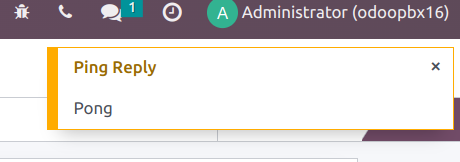
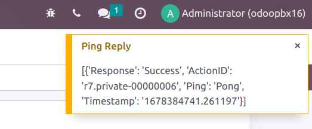

Asterisk Plus
This article explains how to install Asterisk Plus Odoo addon from OdooPBX.
Install the addon in Odoo
First, download the addon from Odoo market
Install the addon as any other Odoo module, refer to Odoo documentation for details if needed.
Install python requirements
Install python dependancy libraries with command:
pip3 install humanize lameenc phonenumbers nats-python
If you use odoo.sh make sure you have requirements.txt file in your modules top folder containing:
humanize
lameenc
phonenumbers
nats-python
So that odoo.sh can install the required dependencies.
If you use python virtualenv make sure you install the requirements there and not system wide.
Odoo version 10 uses python2, so use command pip instead of pip3.
Configure settings
Go to PBX -> Settings -> Server and make sure all settings are correct for your environment,
especially:
AMI HostandAMI Portfor connecton from cloud service to your PBX AMI interface
Built-in HTTP URLfor connection from cloud service to your PBX HTTP interface
WEB Base URLfor connection from cloud serivce to your Odoo
Then press Activate button. You will directed to apps.odoopbx.com for choosing and purchasing your subsription plan.
Upon success you get your subscription code, which looks like 9f058258-1e63-4937-b2a1-a2eaa4dbcb11, and enter it in activation form.
Check connectivity
Press Agent Ping button and you should get pop-up notification.
Press ASTERISK PING button and you should get another pop-up notificaiton:
If neither pop-up notification nor errors are displayed, check Odoo longpolling settings.